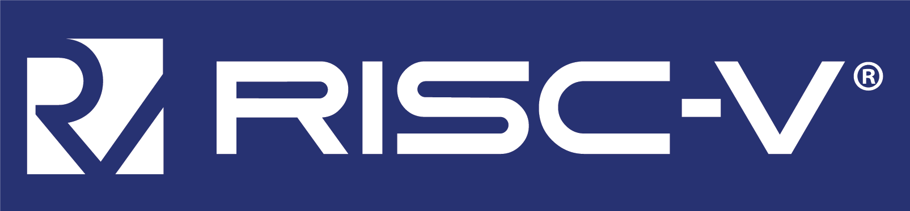

Building a VM
in Rust
(that also runs Rust)
About us

Aimee

Brian
Building a VM in Rust
(that also runs Rust)
- Part 1: VM's, RISC-V, and CKB-VM
- Part 2: Building a RISC-V VM
- Part 3: Running Rust on that VM
Part 1:
VM's, RISC-V, and CKB-VM
Virtual Machines
"Floating Tree"by AlexGroundwater is licensed under CC BY-SA 2.0


Why build a VM?
- Runtime Platform
- Hardware Emulation
- Sandboxing
- Education
VM's are cool!
"Lego"by Myprofe is licensed under CC BY-NC-SA 2.0


CKB-VM
A general-purpose RISC-V VM,
built for the Nervos blockchain network.
Blockchain VM use cases
- Crypto algorithm as a contract
- Existing blockchain VMs
- Higher level languages
- WebAssembly

Why RISC-V?
An open & frozen ISA
Flexible & Extensible
Language support:
Rust, C/C++, Go, Ruby,
Python, JavaScript …
Ecosystem, industry support
RISC-V is cool!
"Lego Bricktober Theater 40180"by mureut.kr is licensed under CC BY-ND 2.0


Part 2:
Building a RISC-V VM
"2015 Lego Club"by Franklin Park Library is licensed under CC BY 2.0

CKB-VM architecture
The limits of Rust
Where did CKB-VM have problems with Rust
Part 3:
Running Rust on CKB-VM
ありがとう！
https://t.me/nervos_ckb_dev